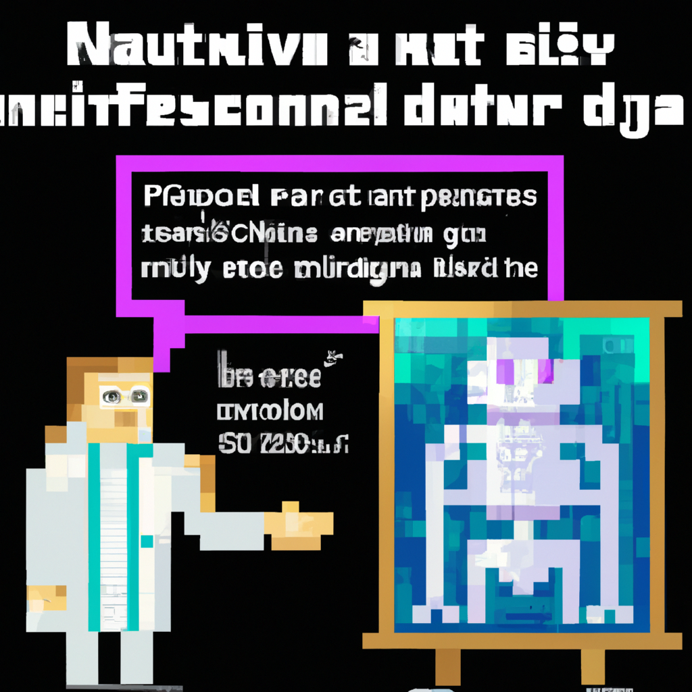

Why AI will never replace the radiologist
We’ve all heard about the potential of artificial intelligence (AI) to revolutionize healthcare, and radiology is no exception. AI algorithms are being developed to detect diseases from medical imaging, and many people are wondering if AI will one day replace radiologists.
While it’s true that AI can be used to detect abnormalities in medical images, it’s important to remember that AI is still in its infancy. AI algorithms are still limited in their ability to interpret images, and they make mistakes. Even the best algorithms can fail due to unexpected conditions or subtle differences in the data.
On the other hand, experienced radiologists have an intuitive understanding of the data that is hard to replicate with AI. Radiologists can detect subtle changes in the images that AI systems might miss, and they can interpret the data in the context of the patient’s medical history.
For these reasons, I don’t think AI will ever completely replace radiologists. AI algorithms certainly have the potential to improve the accuracy and efficiency of radiology, but they will never completely replace the experience and intuition of a radiologist.